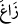

( ) ifâdesindeki hemze istifham anlamında olup hemze-i katı’dır. Aslı ()’dur. Başında bir hemze-i istifhâmın bulunmasından dolayı kendisine ihtiyaç kalmadığı
) ifâdesindeki hemze istifham anlamında olup hemze-i katı’dır. Aslı ()’dur. Başında bir hemze-i istifhâmın bulunmasından dolayı kendisine ihtiyaç kalmadığı
için ()’daki hemze-i vasıl hazfedilmiştir. () kelimesindeki ( ), zamme ()
), zamme ()
ve hem de ( ) kesre ile okunabilir. Bu kelime, (
) kesre ile okunabilir. Bu kelime, ( ) fiilinin masdarıdır.
) fiilinin masdarıdır.
(Fîrûzâbâdî) el-Kâmûs’ta der ki: () fiili, “alay etti” anlamında olup () da
aynı anlamdadır. İsim hâli () ve () şeklindedir. ( ) kesreli de olabilir.
) kesreli de olabilir.
( ) maddesine mübâlağa için bir de nisbet yâ’sı eklenmiştir, çünkü bu tip ()’ler
) maddesine mübâlağa için bir de nisbet yâ’sı eklenmiştir, çünkü bu tip ()’ler
fiile daha fazla anlam ve güç katar; () lâfzına ( ) ilâve edilip kelimenin ()
) ilâve edilip kelimenin ()
şekline dönüşmesinde olduğu gibi.
Müşrikler bu sözleri, onlarla alay etmelerinden dolayı kendilerini kınayıp kötülemek
amacıyla söylemektedirler ki buna göre “istifham”, kendi durumunu kötüleyip
benimsememe, azarlama, kınama ve beğenmeme anlamları vermiş olmaktadır. Diğer bir
ifâdeyle, biz onları tuttuk, onlarla alay ediyoruz, derler.
Yoksa (buradalar da) onları gözden mi kaçırdık?”
(), istikamet hâlinden uzaklaşıp kaydı, demektir. ( ) göz kaydı, ifâdesi ise
) göz kaydı, ifâdesi ise
“baktığı şeyi tam olarak seçemedi” anlamındadır. ()’in ( )’i, (
)’i, ( ) ifâdesi ile
) ifâdesi ile
birlikte düşünülmesi (mu’âdele) gereken bir em-i muttasıladır: Yâni, biz bunlara şu
ikisinden hangisini yaptık; bunlarla dalga mı geçtik yoksa onları küçümseyip hafife mi
aldık? Göz kaymasına “tahkir” anlamı veriyoruz, çünkü bir şeye iltifat etmeyip gözü
ondan kaçırmak, onu küçümseyip tahkir etmenin ayrılmaz vasıflarından olduğu için
tahkir anlamı kinâye olarak bu ifâde ile anlatılmıştır.
Hasan-ı Basrî der ki: “Bunun ikisini de yapmışlardı. Onlarla hem dalga geçmişlerdi
hem de onları küçümseyerek bakışlarını onlardan kaçırmışlardı.
Âyetteki bu ifâde, bunların her iki fiili de yapmış olduklarından dolayı kendilerini
kınamak amacıyla durumlarını beğenmediklerini anlatmaktadır.
( )’in ()’inin em-i munkatı’a olması da mümkündür. O zaman mânâ, biz onlarla
)’in ()’inin em-i munkatı’a olması da mümkündür. O zaman mânâ, biz onlarla
alay mı ettik, aksine kendilerini tahkir eden gözlerimiz onlardan kaçmış. Onlar bizden
daha hayırlı insanlarmış, ama nereden bilebilirdik? şeklinde olur. Burada da düşkün
müslümanlarla alay etmelerinden dolayı kendilerini kınadıktan sonra ‘aksine’ diyerek
(ıdrâb) bu kınamadan bir başka kınamaya yâni bunları tahkir etmiş olmalarını kınamaya
geçmişlerdir.
Bazı haberlerde gelmiştir ki, Allah Teâlâ bu grup fakirleri, kâfirler onları görsün de
hasret ve pişmanlıkları artsın diye cennet odalarında dolaştırır.